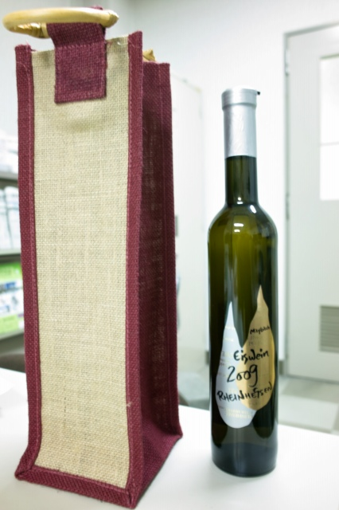
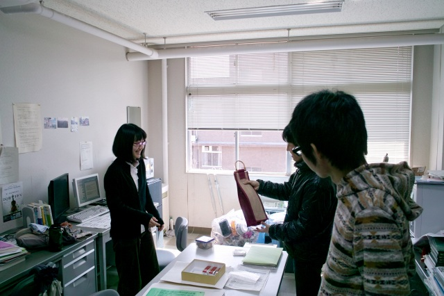
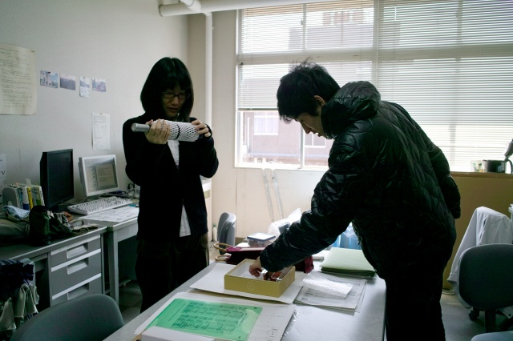
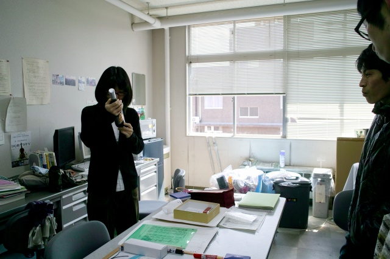
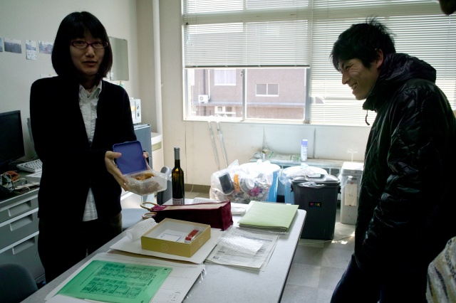
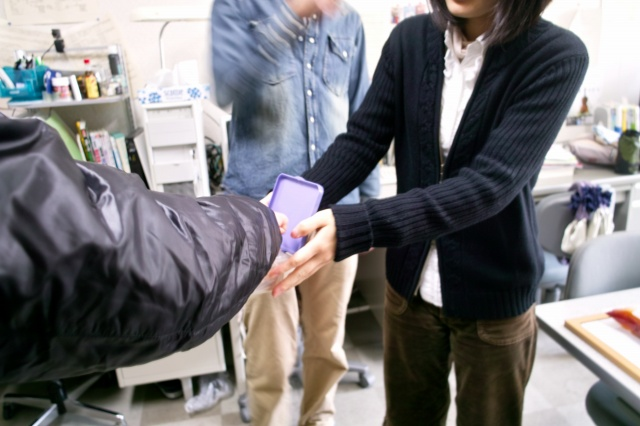

| ・White day (H24.03.14) | |||
先月のバレンタインのお返しをするチャンスがやってきました！そろそろ貰ってばかりではいけません。White dayって日本の習慣なんですね。律儀というか。なるほど、クッキーやキャンディ、マシュマロを贈るのか。K岡先輩と言えばドイツワイン。今回は貰ったみんなでお金を集めてワインにしました。 |
|||
|

K城くんが三条まで買い出しに行ったアイスワイン |

プレゼンタはM下くん | ||
|

緩衝材を外して |

喜んで貰えたようです | ||
|

S浦くんはクッキーをお返し |

お菓子作り男子だったとは！ | ||